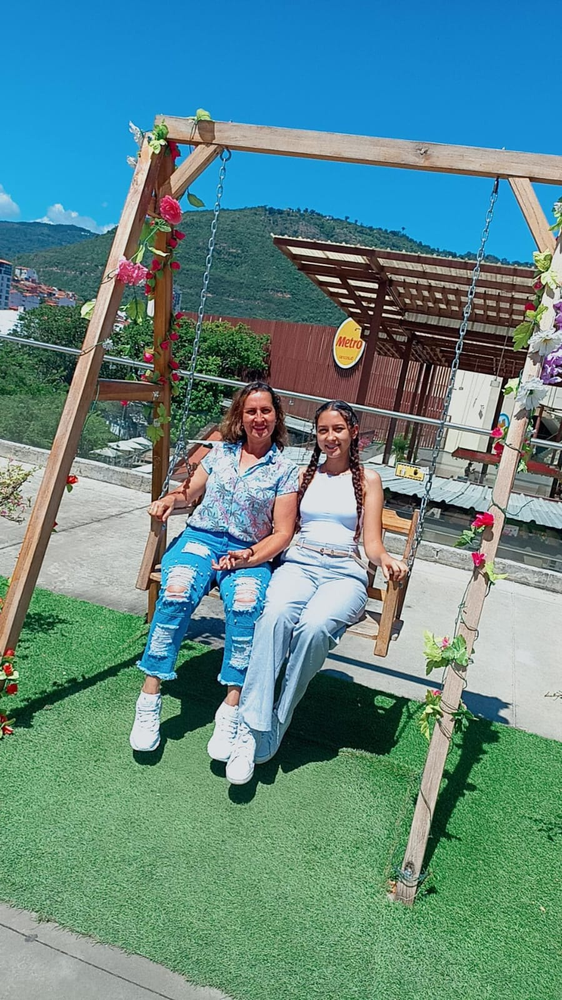
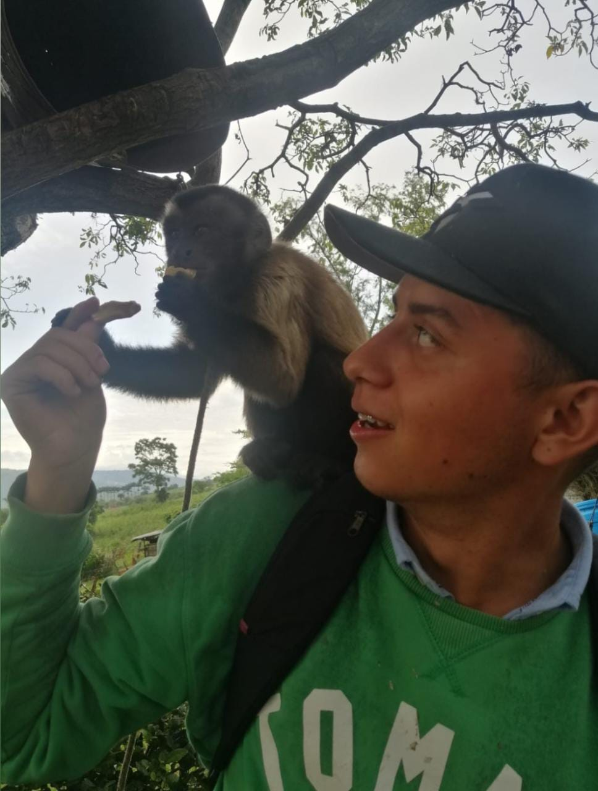

En mi familia somos 5, mi papá, mi mamá, mi hermano, mi hermana y yo. Siempre hemos estado muy unidos y tratamos de estar en todo momento. Mi papá es profesor al igual que mi mamá, mi hermano es ingeniero civil y mi hermana está estudianto arquitectura.

Ella es mi mamá y es mi modelos a seguir, a lo largo de mi vida ella me a inculcado los valores y el respeto que debo tener, ella ha luchado para tener cada una de las cosas de las que hoy gosa, siempre la he visto como una luchadora y una mujer que no se rinde.
Con mi papá he creado una de las relacones mas lindas, siemore me da consejos y dedes pequeña lo he acompañado a todas parte, lo admiro como hombre y como padre
Ella es mi hermana, tiene 18 aos y estudia arquitectura en la universidad de Santo Tomás, es una persona que tiene mucha paciencia y es muy calmada, es muy creativa.

El es mi hermano y es el mayor, es ingeniero ivil y estudio en la universidad de Santo Tomás, es un homnre muy servicial y expontaneo, tiene muchos talentos y entre esos está colmarme la paciencia.